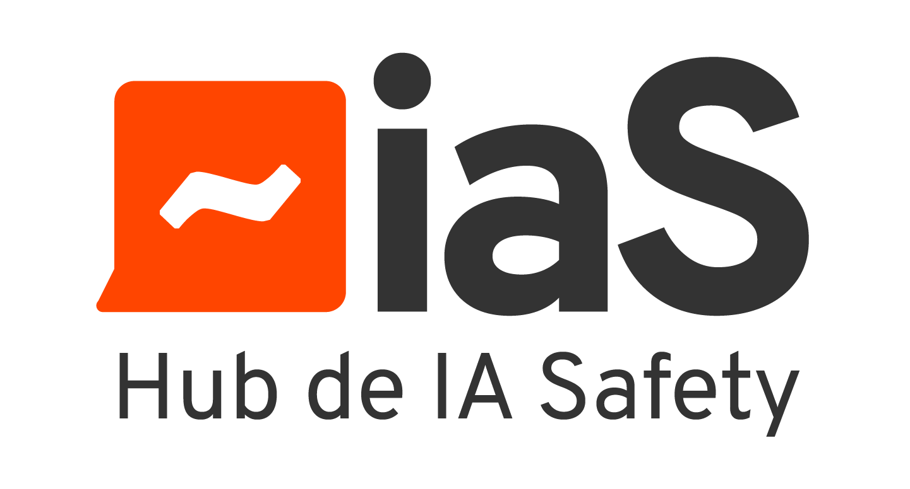

That's not just an inclusion problem. It's a safety problem.

The benefits we have today are not guaranteed tomorrow. A system built by few, for few, can change what it protects — and most of us are not yet part of that process.
W4AIS exists to change that, now, while the field is still being shaped, by building the career network women need to actually get into it and move up in it.
Whether you are already work in AI safety, alignment, governance or policy, or you are trying to break into the field, this is your space to find opportunities, get visibility, and meet the people who can open doors.
Right now, that means one thing: the network. Here's what it will open up.
Roles, fellowships and introductions surfaced from inside the field.
Speaking slots, features and referrals that put you in front of the right people.
A working network across alignment, governance and policy — not a mailing list.
We gather regularly: real conversations, real connections — not just another panel to watch.
We're part of the global AI safety ecosystem, collaborating closely with BlueDot Impact and the international network of local hubs.

This field is still being shaped. Help shape it.
Join the network